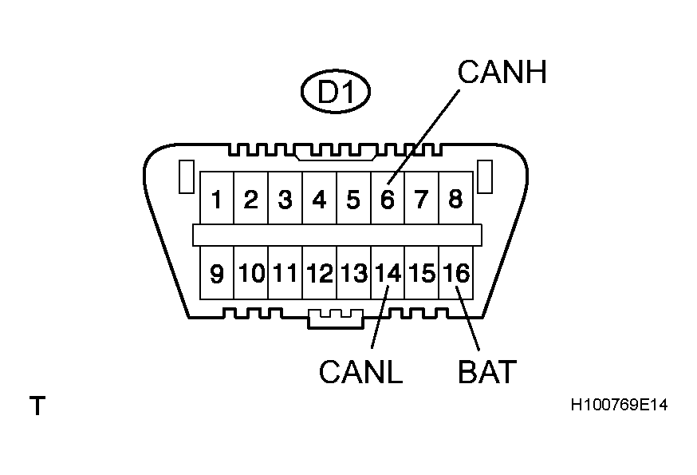
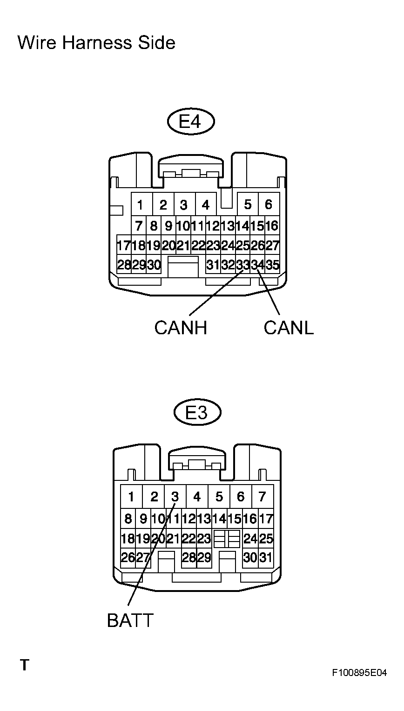
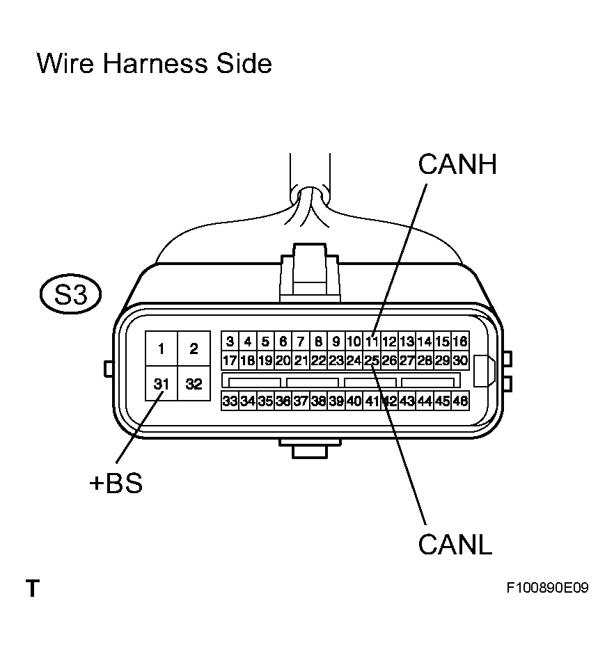
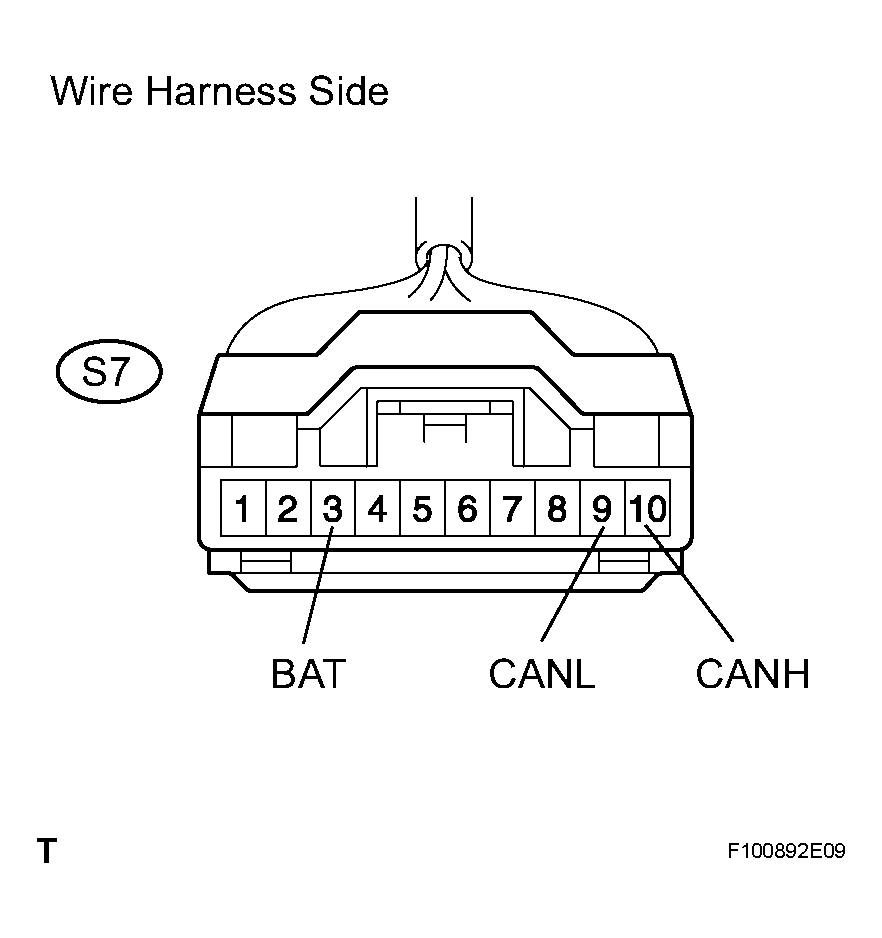

Inspection Procedure
- CHECK CAN BUS LINE FOR SHORT TO B+ (DLC3 SUB BUS LINE)
- Disconnect the J5 junction connector.
- Measure the resistance of the DLC3.
Standard resistance
TESTER CONNECTION SPECIFIED CONDITIONTester Connection Condition Specified Condition D1-6 (CANH) - D1-16 (BAT) Ignition switch OFF 1 MΩor higher D1-14 (CANL) - D1-16 (BAT) Ignition switch OFF 1 MΩor higher
NG : REPAIR OR REPLACE DLC3 SUB BUS LINE AND CONNECTOR

Courtesy of © TOYOTA, LICENSE AGREEMENT TMS1002OK : Go to Next Step
- CONNECT CONNECTOR
- Reconnect the J5 connector to the junction connector.
NEXT
- CHECK CAN BUS LINE FOR SHORT TO B+ (ECM)
- Disconnect the E4 ECM connector.
- Measure the resistance of the DLC3.
Standard resistance
TESTER CONNECTION SPECIFIED CONDITIONTester Connection Condition Specified Condition D1-6 (CANH) - D1-16 (BAT) Ignition switch OFF 1 MΩor higher D1-14 (CANL) - D1-16 (BAT) Ignition switch OFF 1 MΩor higher
OK : REPLACE ECM
NG : Go to Next Step
- CHECK CAN BUS LINE FOR SHORT TO B+ (A/C AMPLIFIER)
- Reconnect the E4 ECM connector.
- Disconnect the A17 amplifier connector.
- Measure the resistance of the DLC3.
Standard resistance
TESTER CONNECTION SPECIFIED CONDITIONTester Connection Condition Specified Condition D1-6 (CANH) - D1-16 (BAT) Ignition switch OFF 1 MΩor higher D1-14 (CANL) - D1-16 (BAT) Ignition switch OFF 1 MΩor higher
OK : REPLACE A/C AMPLIFIER
NG : Go to Next Step
- CHECK CAN BUS LINE FOR SHORT TO B+ (SKID CONTROL ECU)
- Reconnect the A17 amplifier connector.
- Disconnect the S3 ECU connector.
- Measure the resistance of the DLC3.
Standard resistance
TESTER CONNECTION SPECIFIED CONDITIONTester Connection Condition Specified Condition D1-6 (CANH) - D1-16 (BAT) Ignition switch OFF 1 MΩor higher D1-14 (CANL) - D1-16 (BAT) Ignition switch OFF 1 MΩor higher
OK : REPLACE BRAKE ACTUATOR ASSEMBLY
Courtesy of © TOYOTA, LICENSE AGREEMENT TMS1002NG : Go to Next Step
- CHECK CAN BUS LINE FOR SHORT TO B+ (STEERING SENSOR)
- Reconnect the S3 ECU connector.
- Disconnect the S7 sensor connector.
- Measure the resistance of the DLC3.
Standard resistance
TESTER CONNECTION SPECIFIED CONDITIONTester Connection Condition Specified Condition D1-6 (CANH) - D1-16 (BAT) Ignition switch OFF 1 MΩor higher D1-14 (CANL) - D1-16 (BAT) Ignition switch OFF 1 MΩor higher
OK : REPLACE STEERING SENSOR
Courtesy of © TOYOTA, LICENSE AGREEMENT TMS1002NG : Go to Next Step
- CHECK CAN BUS LINE FOR SHORT TO B+ (YAW RATE SENSOR)
- Reconnect the S7 sensor connector.
- Disconnect the Y1 sensor connector.
- Measure the resistance of the DLC3.
Standard resistance
TESTER CONNECTION SPECIFIED CONDITIONTester Connection Condition Specified Condition D1-6 (CANH) - D1-16 (BAT) Ignition switch OFF 1 MΩor higher D1-14 (CANL) - D1-16 (BAT) Ignition switch OFF 1 MΩor higher
OK : REPLACE YAW RATE SENSOR
Courtesy of © TOYOTA, LICENSE AGREEMENT TMS1002NG : Go to Next Step
- CHECK CAN BUS LINE FOR SHORT TO B+ (ECM - JUNCTION CONNECTOR)
- Reconnect the Y1 sensor connector.
- Disconnect the J5 junction connector.
- Disconnect the E4 and E3 ECM connectors.
- Measure the resistance of the wire harness side connectors.
Standard resistance
TESTER CONNECTION SPECIFIED CONDITIONTester Connection Condition Specified Condition E4-33 (CANH) - E3-3 (BATT) Ignition switch OFF 1 MΩor higher E4-34 (CANL) - E3-3 (BATT) Ignition switch OFF 1 MΩor higher
NG : REPAIR OR REPLACE CAN MAIN BUS LINE AND CONNECTOR (ECM - JUNCTION CONNECTOR)

Courtesy of © TOYOTA, LICENSE AGREEMENT TMS1002OK : Go to Next Step
- CHECK CAN BUS LINE FOR SHORT TO B+ (A/C AMPLIFIER - JUNCTION CONNECTOR)
- Disconnect the A17 amplifier connector.
- Measure the resistance of the wire harness side connector.
Standard resistance
TESTER CONNECTION SPECIFIED CONDITIONTester Connection Condition Specified Condition A17-8 (CANH) - D1-16 (BAT) Ignition switch OFF 1 MΩor higher A17-9 (CANL) - D1-16 (BAT) Ignition switch OFF 1 MΩor higher HINT:
Check the wire harness of the connector that was connected to the junction connector.
NG : REPAIR OR REPLACE CAN MAIN BUS LINE AND CONNECTOR (A/C AMPLIFIER - JUNCTION CONNECTOR)
- CHECK CAN BUS LINE FOR SHORT TO B+ (SKID CONTROL ECU - JUNCTION CONNECTOR)
- Disconnect the S3 ECU connector.
- Measure the resistance of the wire harness side connector.
Standard resistance
TESTER CONNECTION SPECIFIED CONDITIONTester Connection Condition Specified Condition S3-11 (CANH) - S3-31 (+BS) Ignition switch OFF 1 MΩor higher S3-25 (CANL) - S3-31 (+BS) Ignition switch OFF 1 MΩor higher
NG : REPAIR OR REPLACE CAN SUB BUS LINE AND CONNECTOR (SKID CONTROL ECU - JUNCTION CONNECTOR)

Courtesy of © TOYOTA, LICENSE AGREEMENT TMS1002OK : Go to Next Step
- CHECK CAN BUS LINE FOR SHORT TO B+ (STEERING SENSOR - JUNCTION CONNECTOR)
- Disconnect the S7 sensor connector.
- Measure the resistance of the wire harness side connector.
Standard resistance
TESTER CONNECTION SPECIFIED CONDITIONTester Connection Condition Specified Condition S7-10 (CANH) - S7-3 (BAT) Ignition switch OFF 1 MΩor higher S7-9 (CANL) - S7-2 (ESS) Ignition switch OFF 1 MΩor higher
NG : REPAIR OR REPLACE CAN SUB BUS LINE AND CONNECTOR (STEERING SENSOR - JUNCTION CONNECTOR)

Courtesy of © TOYOTA, LICENSE AGREEMENT TMS1002OK : REPAIR OR REPLACE YAW RATE SENSOR SUB BUS LINE AND CONNECTOR